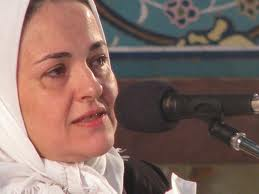

|
|
|
Browsing
Contact Us |
Campaigners |
Face to Face |
Tribune |
Interview |
News |
On the Web |
One Million |
Report
Farsi | Français | German | Italian | Spanish | العربية Also in this section
|
 Daughter of Deceased Dissident Dies Following Attack During Father’s BurialWednesday 1 June 2011 View online : International Campaign for Human Rights in Iran Interference by security and plainclothes agents in the funeral of prominent Iranian political activist Ezatollah Sahabi, including beatings of mourners, led to the death of Sahabi’s daughter Haleh, who suffered a fatal heart attack at the event today. “The shameful actions of government thugs in this incident reveal a deep contempt for traditions that belong to all Iranians, and they have resulted in a tragedy,” said Hadi Ghaemi, spokesperson for the Campaign. The Campaign called upon the Iranian Judiciary to investigate the incident at Ezatollah Sahabi’s funeral, and for Iran’s highest political and religious authorities to forbid security forces from any physical or psychological assaults or any other form of interference in funeral observances, regardless of the political views of the deceased and their families. A journalist present at the funeral procession of Ezatollah Sahabi, a prominent political activist, dissident, and a member of the Freedom Movement, told the Campaign that there was a large group of plainclothes and security forces present at the ceremony who beat a number of mourners. Haleh Sahabi was holding a photograph of her father in her hands when she was attacked by a group of plainclothes forces who tried to take the photograph away from her. She then headed toward her father’s coffin, but she was beaten and pulled away from the coffin, which was taken away by government forces. At this point, Haleh Sahabi’s suffered a heart attack. She subsequently died after she was transferred to Lavasan clinic in Tehran. Haleh Sahabi, 54, was herself a political activist and religious scholar. TheInternational Campaign for Human Rights in Iran expresses deep regret about Haleh Sahabi’s tragic and needless death, and condemns the presence of plainclothes forces and their aggressive actions that clearly precipitated her passing. “The grotesque interference in Eztollah Sahabi’s funeral is emblematic of the severe repression of Iranian political and civil society activists, who, even at their loved ones’ funerals, have to suffer systematic abuse by unaccountable, unidentified individuals,” Ghaemi said. Haleh Sahabi had been arrested outside the Iranian Parliament on 6 August 2009, during Mahmoud Ahmadinejad’s inauguration. She was sentenced to two years in prison and cash fines by Branch 26 of Tehran Revolutionary Court. |